This mountain is on The Gribbon List, it will be part of the total metres for my Ten Thousand Metre Challenge, a fundraiser for Mountain Rescue Ireland, you can support by donating at High Point Ireland 10,000m Challenge 2017 fundraiser page.
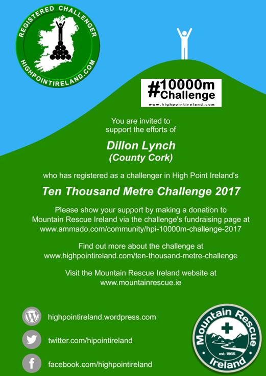
Delighted to walk with Sandra Prendergast today as she nears the end of her challenge raising Funds and Awareness for Pieta House by climbing to the Highest Point of each of the 32 Counties of Ireland. Earlier this morning Sandra climbed to Knockmealdown the highest point of Waterford. We joined in for Galtymore, the highest of Limerick and Tipperary.
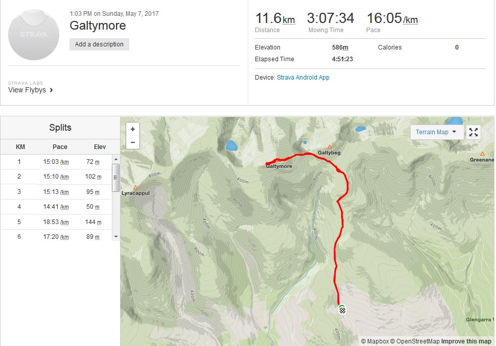Map
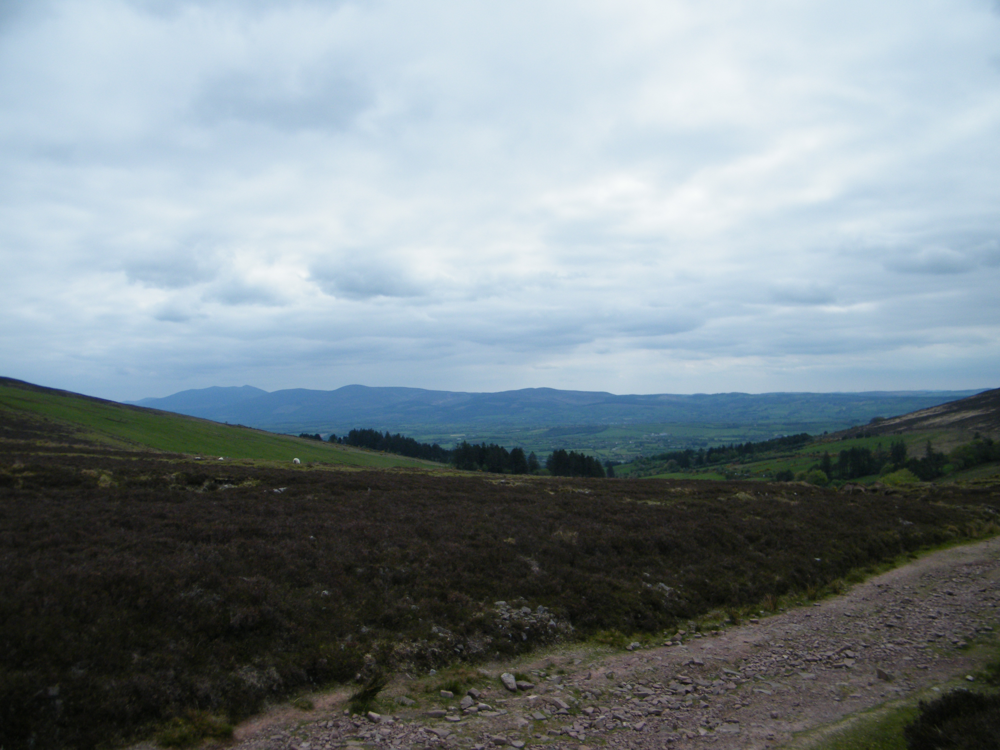Looking back towards the Knockmealdown mountains from the start.
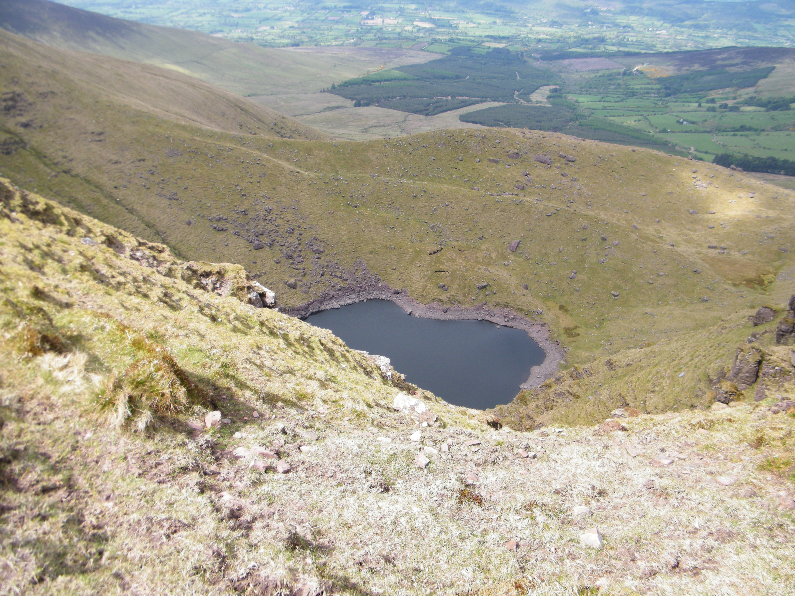Lough Diheen.
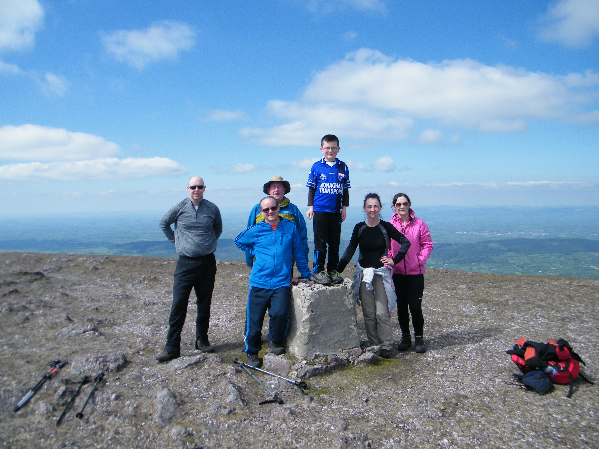We joined Sandra Prendergast raising funds and awareness for Pieta House today.
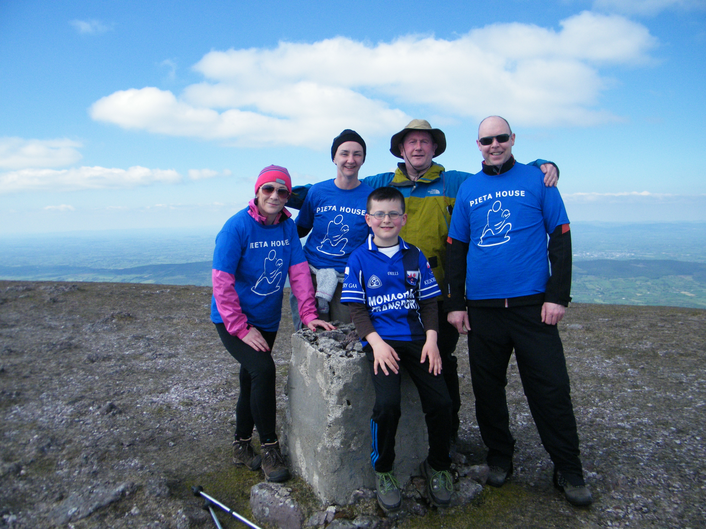Sandra Prendergast raising funds and awareness for Pieta House official high point of Tipperary.
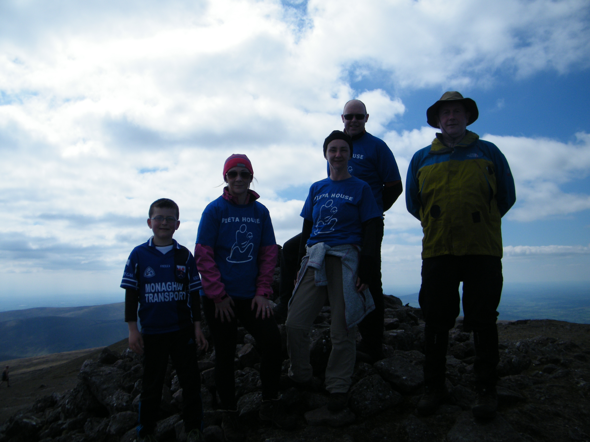Official high point of Limerick.
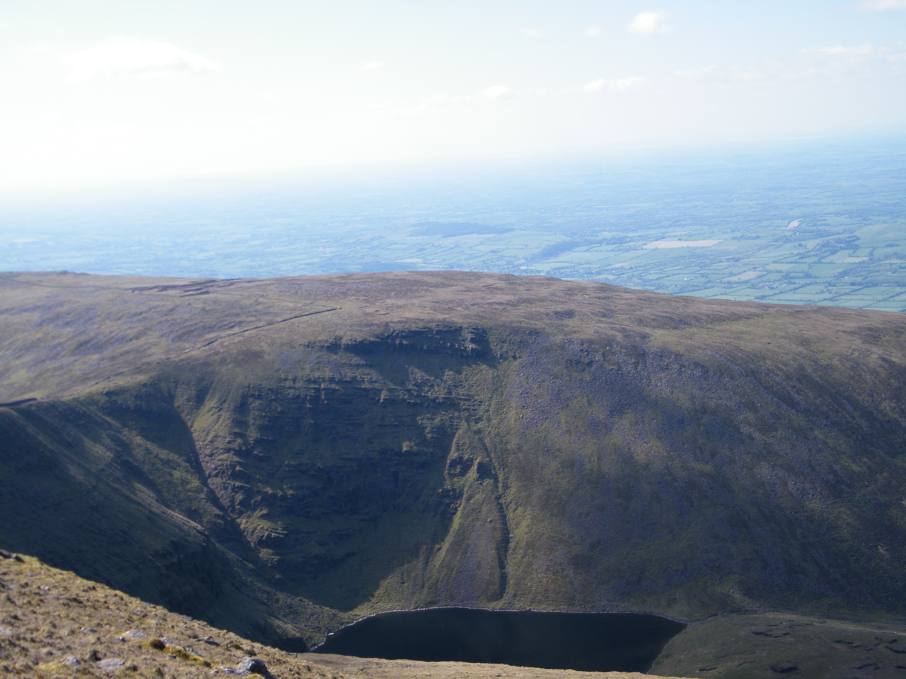Lough Curra from Galtymore.
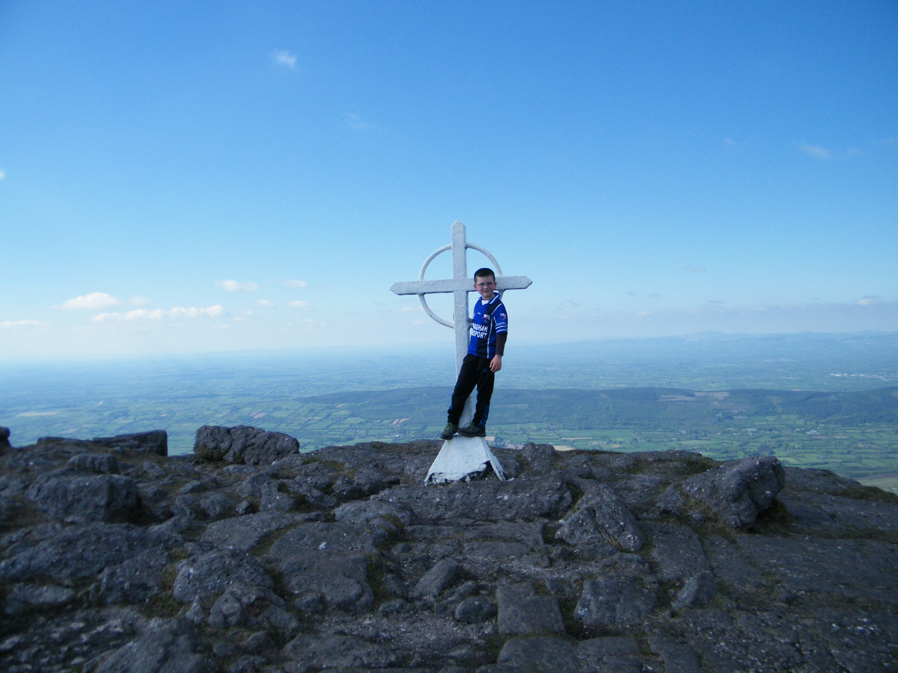The cross of Galtymore.
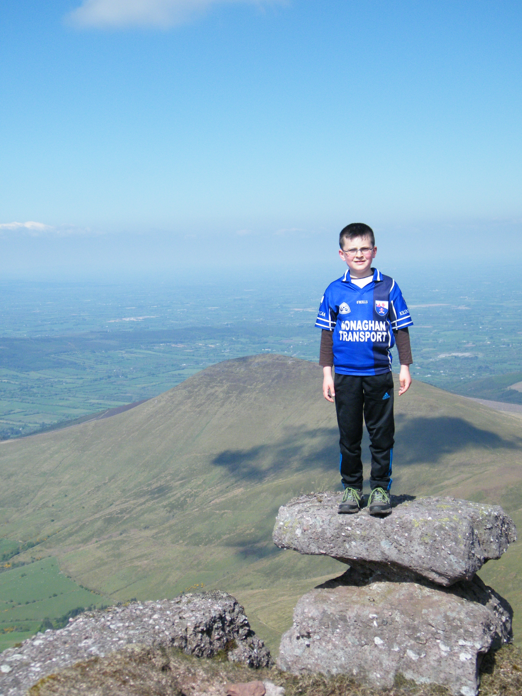Top of the world.
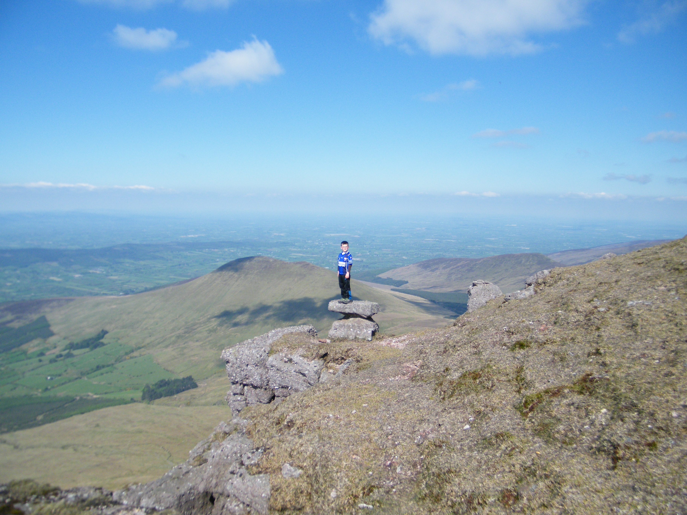In a league of my own.
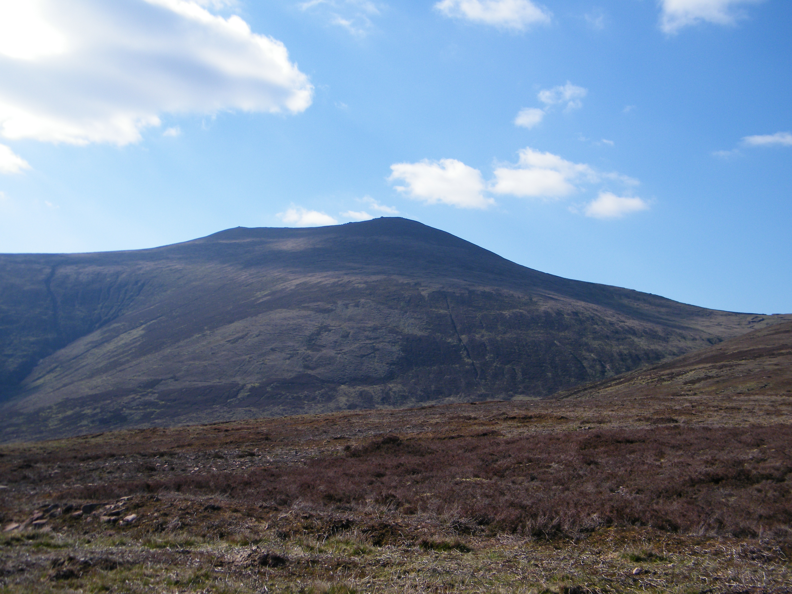Unbelievable day for it today.